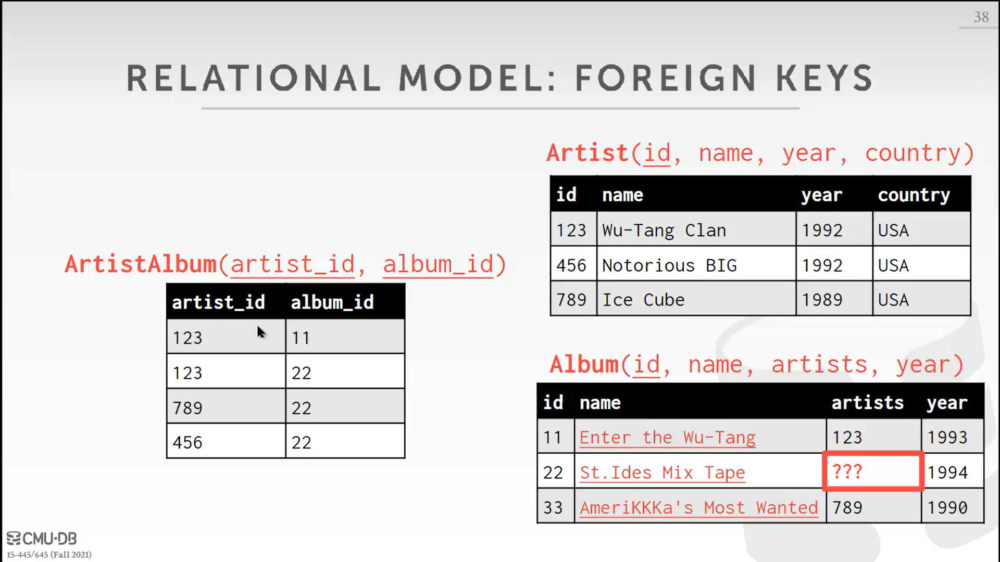
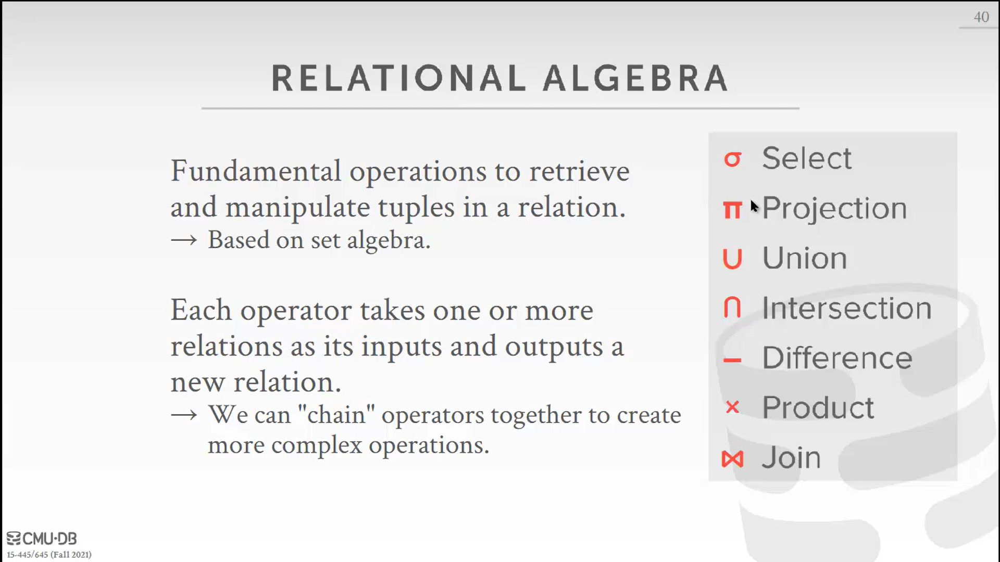
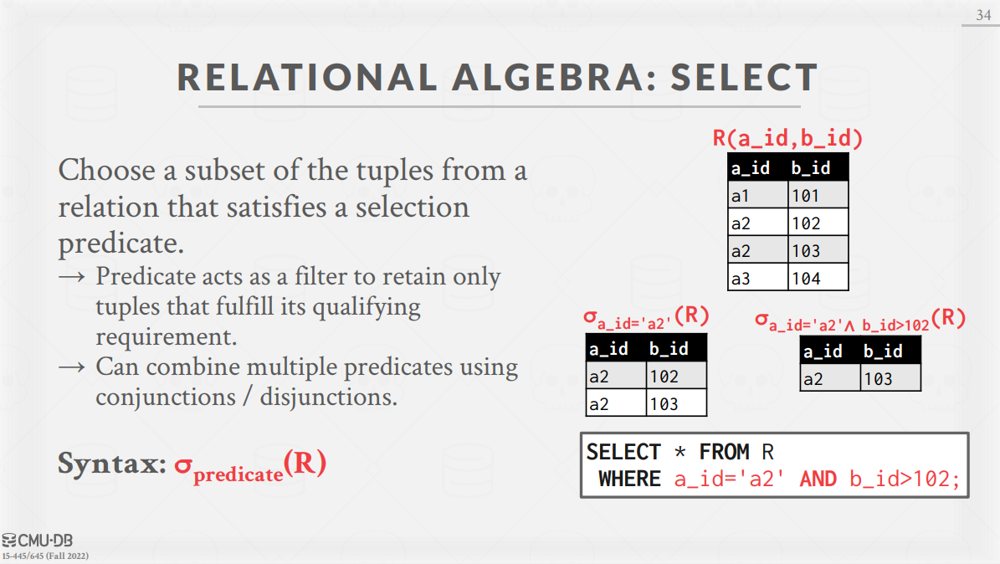
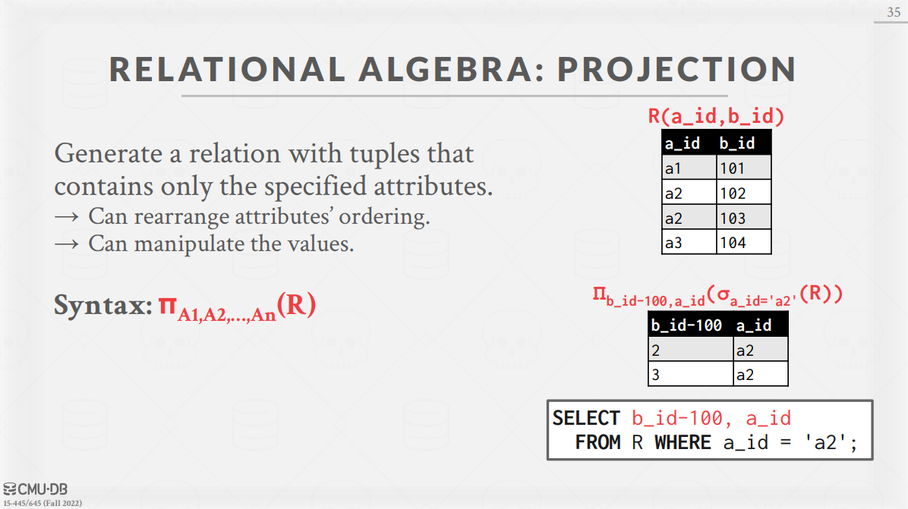
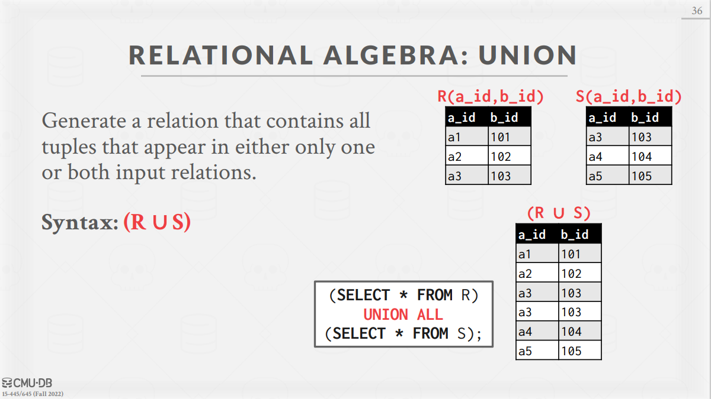
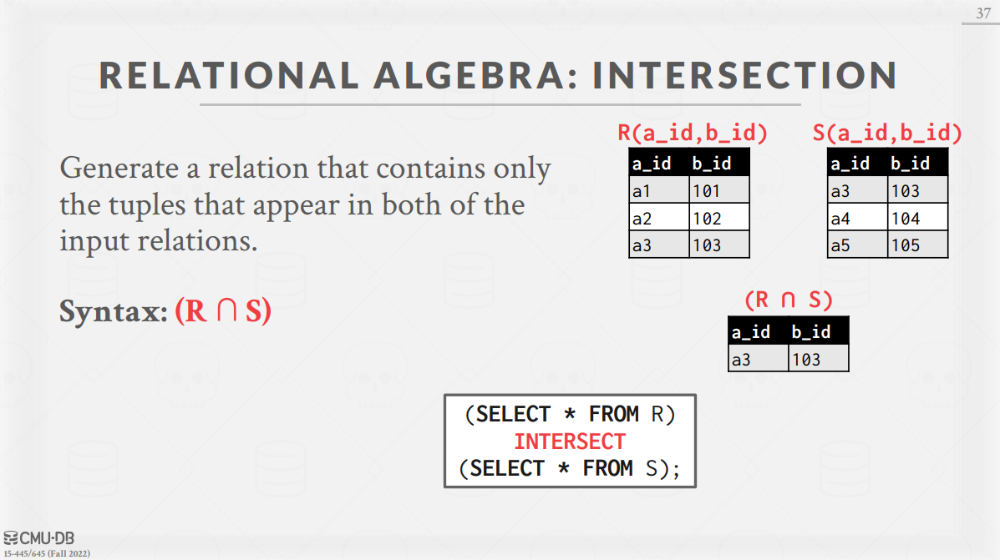
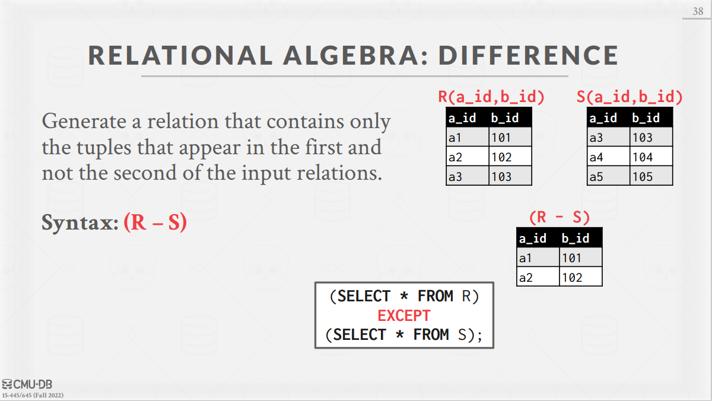
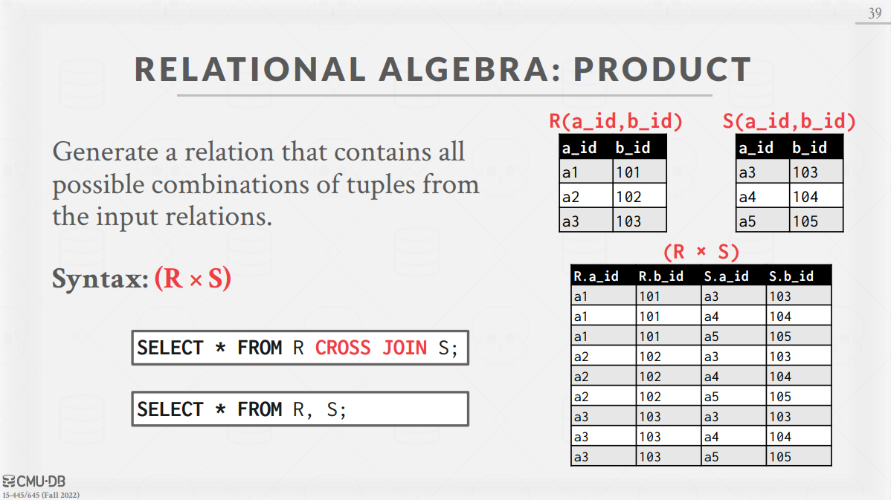
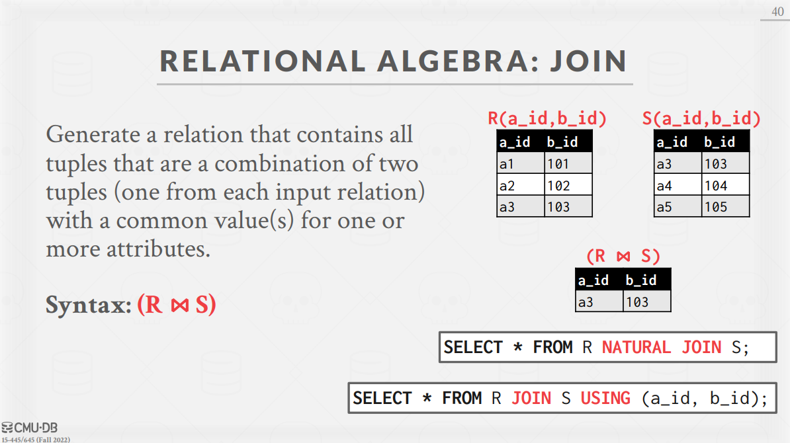
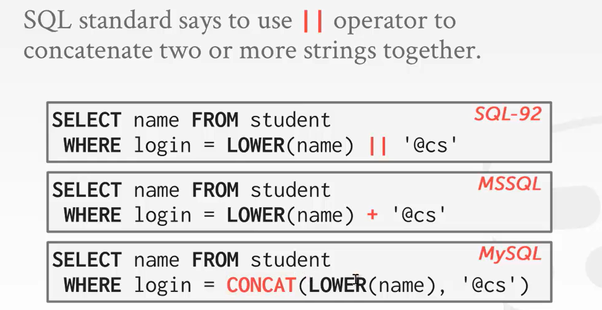

Schedule | CMU 15-445/645 :: Intro to Database Systems (Fall 2022)](https://15445.courses.cs.cmu.edu/fall2022/schedule.html)
# Lesson#01. 关系模型 & 关系代数（Relational Model & Relational Algebra）
# Database
数据库 (Database,DB) 是一个有组织的、互相关联的、对现实世界的某些方面进行建模的集合。
严格来讲，数据库是长期存储在计算机内、有组织的、可共享的大量数据的集合。数据库中的数据按一定的数据模型组织、描述和储存，具有较小的冗余度 ()、较高的数据独立性 () 和易扩展性 ()，并可为各种用户共享。
本笔记中，用一个存储着艺术家和对应的专辑信息的数据库作为例子，亦即数字音乐商店 (A database that models a digital music store)。
# Flat File Strawman
数据库常常以 CSV (comma-separated value) 文件的形式存储，由 DBMS 进行管理。每次应用程序要读取或者更新记录时，都必须解析文件 (parse files)。
以数字音乐商店的例子，会有两个文件，一是艺术家，二是专辑。
每个实体都有自己的属性集，所以在每个文件中，不同的记录都用新的行来划分，而一条记录中的每个相应属性都用逗号隔开。
例子：
| Name | Year | Country |
|---|---|---|
| Wu-Tang Clan | 1992 | USA |
| Notorious BIG | 1992 | USA |
| GZE | 1990 | USA |
Issues with Flat File
-
Data Integrity
数据完整性
-
Implementation
执行 -
Durability
耐受性
# Database Management System(DBMS)
一个 DBMS 是一个能让应用在数据库中保存与分析数据的软件
通常，DBMS 设计的目的是允许定义、创建、查询、更新和管理符合某种数据模型的数据库。
-
Data model：
数据模型是描述数据库中数据的概念的集合。A data model is a collection of concepts for describing the data in database.Example: Relational (most common), NoSQL (key/value, graph, Document, Column-family), array/matrix/vectors
- Relational
- Key/Value (Redis)
- Graph
- Document
- Column-family 列族数据库
- Array/Matrix (machine learning)
-
Schema：
模式是对基于数据模型的特定数据集合的描述。
Early DBMSs
早期，数据库应用很难建立和维护，因为逻辑层和物理层之间存在着高度耦合 (a tight coupling between logical and physical layers)。
- 逻辑层：
描述了数据库有哪些实体和属性。 - 物理层：
是这些实体和属性的存储方式。
所以早期的数据库，一旦改变了物理层，逻辑层也得跟着变。
# Relational Model
人们每次改变物理层都要重新写数据管理系统，故 Ted Codd 注意到后提出了关系模型。
-
Relational Model：
关系模型定义了一个基于关系的数据库抽象概念，有 3 个关键点：
- Store database in simple data structures (relations).
- Access data through high-level language, DBMS figures out best execution strategy.
- Physical storage left up to the DBMS implementation.
简单来说就是：用简单的数据结构保存，用高级语言来访问，并让 DBMS 来执行最优策略以及处理物理层存储。
-
关系模型定义的三个概念：
- Structure：
关系定义和内容。也就是关系具有的属性以及可以有的值。 - Integrity：
确保数据库的内容满足约束条件。比如：年份必须是数字。 - Manipulation：
如何访问和修改数据库的内容。
- Structure：
-
关系 (relation)：
关系是一个无序的集合 (an unordered set)，包含代表的实体的属性关系。因为是无序的，所以 DBMS 可以用它想要的任何方式存储它们，并允许优化。 -
元组 (tuple)：
元组指的是关系中的一组属性值 (a set of attribute values in the relation, also known as its domain)。Originally, values had to be atomic or scalar, but now values can also be lists or nested data structures. Every attribute can be a special value, NULL, which means for a given tuple the attribute is undefined.
起初，值必须是原子的 (atomic) 或者标量 (scalar)，但现在值也可以是一个特殊的值
NULL，表示为定义。 -
有 n 个属性的关系，叫做：n-ary relation。
-
一张二维表，每行对应一个元组，每列对应一个域。
-
Keys：
一个关系的 primary key 唯一的定义了单个元组。很多 DBMS 都支持 auto-generated keys，所以程序就不需要手动增加了，但 primary key 还是在某些 DBMS 是需要的。- Primary key / 主键：唯一的定义了单个元组。
- Foreign key / 外键：指定一个关系中的属性必须映射到另一个关系中的元组。

# Data Manipulation Languages (DML)
DML（data manipulation language）是数据操纵语言：它们是 SELECT、UPDATE、INSERT、DELETE，就象它的名字一样，这 4 条命令是用来对数据库里的数据进行操作的语言。
DDL（data definition language）是数据定义语言：DDL 比 DML 要多，主要的命令有 CREATE、ALTER、DROP 等，DDL 主要是用在定义或改变表（TABLE）的结构，数据类型，表之间的链接和约束等初始化工作上，他们大多在建立表时使用。
DCL（Data Control Language）是数据库控制语言：是用来设置或更改数据库用户或角色权限的语句，包括（grant,deny,revoke 等）语句。
有两类语言去保存和检索在数据库中的信息。
- Procedural：
The query specifies the (high-level) strategy the DBMS should use to find the desired result based on sets / bags. (relational algebra) - Non-Procedural (Declarative 声明式的)：
The query specifies only what data is wanted and not how to find it. (relational calculus)
一般现在都是用第二种的，我不管 DBMS 用什么策略，我只需要你给我我想要的数据。
# Relational Algebra
关系代数 (Relational Algebra) 就是一组基本操作，用于检索和操作关系中的图元。
每个操作符都需要一个或多个关系作为输入，并输出一个新的关系。为了编写查询，我们可以把这些运算符 "链" 在一起，以创建更复杂的操作。

Select takes in a relation and outputs a subset of the tuples from that relation that satisfy a selection predicate. The predicate acts like a filter, and we can combine multiple predicates using conjunctions and disjunctions.

Projection takes in a relation and outputs a relation with tuples that contain only specified attributes. You can rearrange the ordering of the attributes in the input relation as well as manipulate the values.

Union takes in two relations and outputs a relation that contains all tuples that appear in at least one of the input relations. Note: The two input relations have to have the exact same attributes.

Intersection takes in two relations and outputs a relation that contains all tuples that appear in both of the input relations. Note: The two input relations have to have the exact same attributes.

Difference takes in two relations and outputs a relation that contains all tuples that appear in the first relation but not the second relation. Note: The two input relations have to have the exact same attributes.

Product (笛卡尔积) takes in two relations and outputs a relation that contains all possible combinations for tuples from the input relations.

Join takes in two relations and outputs a relation that contains all the tuples that are a combination of two tuples where for each attribute that the two relations share, the values for that attribute of both tuples is the same.

# Lesson#02. 高级 SQL（Advanced SQL）
SQL (Structured Query Language: 结构化查询语言) 是用于管理关系数据库管理系统（RDBMS）。 SQL 的范围包括数据插入、查询、更新和删除，数据库模式创建和修改，以及数据访问控制。
DML（data manipulation language）是数据操纵语言：它们是 SELECT、UPDATE、INSERT、DELETE，就象它的名字一样，这 4 条命令是用来对数据库里的数据进行操作的语言。
DDL（data definition language）是数据定义语言：DDL 比 DML 要多，主要的命令有 CREATE、ALTER、DROP 等，DDL 主要是用在定义或改变表（TABLE）的结构，数据类型，表之间的链接和约束等初始化工作上，他们大多在建立表时使用。
DCL（Data Control Language）是数据库控制语言：是用来设置或更改数据库用户或角色权限的语句，包括（grant,deny,revoke 等）语句。
用户只需要使用声明性语言（即 SQL）来指定他们想要的结果。DBMS 负责确定产生该答案的最有效计划。
关系代数基于 sets (unordered, no duplicates)。
SQL 基于 bags (unordered, allows duplicates)
# SQL 基础语法
-
SELECT 语句
SELECT 语句用于从数据库中选取数据。
SELECT column1, column2, ...
FROM table_name;
SELECT * FROM table_name;
SELECT DISTINCT 语句用于返回唯一不同的值。在表中，一个列可能会包含多个重复值，有时您也许希望仅仅列出不同（distinct）的值。
DISTINCT 关键词用于返回唯一不同的值。
SELECT DISTINCT column1, column2, ...
FROM table_name;
-
WHERE 子句
WHERE 子句用于提取那些满足指定条件的记录。
SELECT column1, column2, ...
FROM table_nameWHERE condition;
SELECT * FROM Websites WHERE country='CN';
WHERE 子句中的运算符
下面的运算符可以在 WHERE 子句中使用：
运算符 描述 = 等于 <> 不等于。注释：在 SQL 的一些版本中，该操作符可被写成！= > 大于 < 小于 >= 大于等于 <= 小于等于 BETWEEN 在某个范围内 LIKE 搜索某种模式 IN 指定针对某个列的多个可能值 -
AND & OR 运算符
AND & OR 运算符用于基于一个以上的条件对记录进行过滤。
如果第一个条件和第二个条件都成立，则 AND 运算符显示一条记录。
如果第一个条件和第二个条件中只要有一个成立，则 OR 运算符显示一条记录。
SELECT * FROM Websites
WHERE alexa > 15
AND (country='CN' OR country='USA');
-
ORDER BY 关键字
ORDER BY 关键字用于对结果集进行排序，对结果集按照一个列或者多个列进行排序。
默认按照升序对记录进行排序。如果需要按照降序对记录进行排序，您可以使用 DESC 关键字。
SELECT * FROM table_name
ORDER BY column1, column2, ... ASC;
ORDER BY column1, column2, ... DESC;
-
INSERT INTO 语句
INSERT INTO 语句用于向表中插入新记录。
第一种形式无需指定要插入数据的列名，只需提供被插入的值即可（需要列出插入行的每一列数据）：
INSERT INTO table_name
VALUES (value1,value2,value3,...);
第二种形式需要指定列名及被插入的值：
INSERT INTO table_name (column1,column2,column3,...)
VALUES (value1,value2,value3,...);
-
UPDATE 语句
UPDATE 语句用于更新表中已存在的记录。
UPDATE table_nameSET column1 = value1, column2 = value2, ...
WHERE condition;
UPDATE WebsitesSET alexa='5000', country='USA'
WHERE name='菜鸟教程';
如果我们省略了 WHERE 子句，执行以上代码会将 Websites 表中所有数据的 alexa 改为 5000，country 改为 USA。
-
DELETE 语句
DELETE 语句用于删除表中的行。
DELETE FROM table_name
WHERE condition;
删除所有数据
您可以在不删除表的情况下，删除表中所有的行。这意味着表结构、属性、索引将保持不变：
DELETE FROM table_name;
** 注释：** 在删除记录时要格外小心！因为您不能重来！
# Joins
结合一个或多个表的列，产生一个新的表。用来表达涉及跨越多个表的数据的查询，
-
本节课举例用的例子：
CREATE TABLE student (
sid INT PRIMARY KEY,
name VARCHAR(16),
login VARCHAR(32) UNIQUE,
age SMALLINT,
gpa FLOAT);
CREATE TABLE course (
cid VARCHAR(32) PRIMARY KEY,
name VARCHAR(32) NOT NULL
);
CREATE TABLE enrolled (
sid INT REFERENCES student (sid),
cid VARCHAR(32) REFERENCES course (cid),
grade CHAR(1)
);
-
哪个学生在 15-721 拿到了 A?
SELECT s.name
FROM enrolled AS e, student AS s
WHERE e.grade = 'A' AND e.cid = '15-721'
AND e.sid = s.sid;
# Aggregate 函数
聚合函数接受一组列表，然后产生一个单一的标量值作为其输出。基本上只能在 SELECT 输出列表中使用！
-
AVG(COL): The average of the values in COL
-
MIN(COL): The minimum value in COL
-
MAX(COL): The maximum value in COL
-
SUM(COL)
-
COUNT(COL): The number of tuples in the relation
-
例子 1：
Get # of students with a ‘@cs’ login.
SELECT COUNT(*) FROM student WHERE login LIKE '%@cs';
SELECT COUNT(login) FROM student WHERE login LIKE '%@cs';
SELECT COUNT(1) FROM student WHERE login LIKE '%@cs';
-
例子 2：
Get # of students and their average GPA with a ‘@cs’ login.
得到
@cs登录的学生的人数和平均 GPASELECT AVG(gpa), COUNT(sid) FROM student WHERE login LIKE '%@cs';有些聚合函数支持
DISTINCT关键字Get # of unique students and their average GPA with a ‘@cs’ login.
得到通过
@cs登录的学生数量，以及他们的 GPA, 要求学生不能重复！SELECT COUNT(DISTINCT login) FROM student WHERE login LIKE '%@cs'; -
Non-aggregated values in SELECT output clause must appear in GROUP BY clause
例子 3：Get the average GPA of students in each course.
得到在每个课上的学生的平均 GPA
SELECT AVG(s.gpa), e.cid FROM enrolled AS e, student AS s WHERE e.sid = s.sid GROUP BY e.cid; -
HAVING 子句在聚合计算的基础上过滤输出结果。这使得 HAVING 的行为像一个 GROUP BY 的 WHERE 子句。
The HAVING clause filters output results based on aggregation computation.
This make HAVING behave like a WHERE clause for a GROUP BY.
例子 5：获取学生平均 GPA 大于 3.9 的课程。
SELECT AVG(s.gpa) AS avg_gpa, e.cid FROM enrolled AS e, student AS s WHERE e.sid = s.sid GROUP BY e.cid HAVING avg_gpa > 3.9;上述查询语法被许多主要的数据库系统所支持，但不符合 SQL 标准。
为了使查询符合标准，我们必须在 AVG (S.GPA) 的主体中重复使用 HAVING 子句
SELECT AVG(s.gpa), e.cid FROM enrolled AS e, student AS s WHERE e.sid = s.sid GROUP BY e.cid HAVING AVG(s.gpa) > 3.9;
# String Operations
SQL 标准是区分大小写的，而且只能是单引号！有一些函数可以处理字符串，可以在查询的任何部分使用。
-
Pattern Matching:
LIKE 操作符用于在 WHERE 子句中搜索列中的指定模式。
SELECT column1, column2, ... FROM table_name WHERE column LIKE pattern; -
通配符
%替代 0 个或多个字符_替代一个字符
-
String Function:
SUBSTRING(S, B, E)
UPPER(S) -
Concatenation:

# Date and Time
-
时间函数
- 当前日期时间
NOW(),CURRENT_TIMESTAMP() - 当前 UNIX 时间戳
UNIX_TIMESTAMP() - 当前日期
CURRENT_DATE() - 当前时间
CURRENT_TIME()
- 当前日期时间
-
日期时间转换函数
-
当前时间戳转换为北京时间
FROM_UNIXTIME() -
北京时间转换为时间戳
UNIX_TIMESTAMP() -
时间中解析年月日时间
DATE_FORMAT(date, format)select DATE_FORMAT('2021-01-01 08:30:50','%Y-%m-%d')
-
-
日期时间运算函数
-
在某个时间的基础上加上或者减去某个时间
DATE_ADD(date,INTERVAL expr unit)
DATE_SUB(date,INTERVAL expr unit) -
返回两个日期值之间的天数
DATEDIFF(expr1,expr2))select DATEDIFF('2021-01-02','2021-01-01') -
时间差函数
TIMESTAMPDIFF(unit,datetime_expr1,datetime_expr2)unit：天 (DAY)、小时 (HOUR），分钟 (MINUTE) 和秒 (SECOND)，TIMESTAMPDIFF 函数比 DATEDIFF 函数用起来更加灵活
-
# Output Redirection (输出重定向)
你可以告诉 DBMS 将查询结果存储到另一个表中，而不是将查询结果返回给客户端（例如，终端）。结果存储到另一个表中。然后你可以在随后的查询中访问这些数据
-
New Table: 将查询的输出存储到一个新的（永久）表中
SELECT DISTINCT cid INTO CourseIds FROM enrolled; -
Exustubg Table:
将查询的输出存储到数据库中已经存在的表中。该表 目标表必须有与目标表相同数量和相同类型的列，但输出查询中的列名不需要匹配。
INSERT INTO CourseIds (SELECT DISTINCT cid FROM enrolled)
# Output Control
因为 SQL 是无序的，我们可以用 ORDER BY 来对输出进行排序
SELECT sid, grade FROM enrolled WHERE cid = '15-721' | |
ORDER BY grade; |
后面可以加 DESC , ASC 来指定排序策略
输出的数量可以用 LIMIT n 进行指定
当然也可以用 OFFSET 来提供一个 bias。
SELECT sid, name FROM student WHERE login LIKE '%@cs' | |
LIMIT 20 OFFSET 10; |
# Nested Queries（内部查询 / 查询嵌套）
在其他查询中调用查询，在单个查询中执行更复杂的逻辑。嵌套查询往往难以优化。
外部查询的范围包括在内部查询中（即内部查询可以访问来自外部
查询），反之不行。
-
内部查询几乎可以出现在一个查询的任何部分。
SELECTOutput TargetsSELECT (SELECT 1) AS one FROM student;
FROMClause:SELECT nameFROM student AS s, (SELECT sid FROM enrolled) AS e
WHERE s.sid = e.sid;
WHEREClauseSELECT name FROM student
WHERE sid IN ( SELECT sid FROM enrolled );
-
例子： 获取在 15-445 中注册的学生名字
SELECT name FROM student
WHERE sid IN (
SELECT sid FROM enrolled
WHERE cid = '15-445'
);
请注意，根据它在查询中出现的位置，sid 有不同的范围。
-
例子：
找到注册了至少一门课的最大的学生 idSELECT student.sid, name
FROM studentJOIN (SELECT MAX(sid) AS sid
FROM enrolled) AS max_e
ON student.sid = max_e.sid;
Nested Query Results Expressions:
-
关键字：
ALL
Must satisfy expression for all rows in sub-queryANY
Must satisfy expression for at least one row in sub-query.IN
Equivalent to =ANY().EXISTS
At least one row is returned.
-
例子：
找到所有没有学生注册的课
SELECT * FROM course
WHERE NOT EXISTS(
SELECT * FROM enrolled
WHERE course.cid = enrolled.cid
);
# Window Function
A window function perform “sliding” calculation across a set of tuples that are related. Like an aggregation but tuples are not grouped into a single output tuple.
-
函数： 窗口函数可以是我们上面讨论的任何一个聚合函数。也有一些特殊的窗口函数。
ROW_NUMBER: 当前列的数字RANK: 当前列的顺序
-
Grouping: OVER 子句指定了在计算窗口函数时如何对图元进行分组。使用 PARTITION BY 来指定分组
SELECT cid, sid, ROW_NUMBER() OVER (PARTITION BY cid)
FROM enrolled ORDER BY cid;
我们也可以在 OVER 中放入 ORDER BY，以确保结果的确定性排序，即使数据库内部发生变化。
SELECT *, ROW_NUMBER() OVER (ORDER BY cid)
FROM enrolled ORDER BY cid;
-
重要提示：
-
DBMS 在窗函数排序后计算
RANK，而在排序前计算ROW_NUMBER。-
找到每门课程中成绩第二高的学生
SELECT * FROM (
SELECT *, RANK() OVER (PARTITION BY cid
ORDER BY grade ASC) AS rank
FROM enrolled) AS ranking
WHERE ranking.rank = 2;
-
# Commom Table Expressions
在编写更复杂的查询时，通用表表达式（CTE）是窗口或嵌套查询的一种替代方法。复杂的查询时，可以替代窗口或嵌套查询。它们提供了一种方法来为用户在一个更大的查询中编写辅助语句.
可以理解为一个辅助表。
WITH 子句将内部查询的输出与一个具有该名称的临时结果绑定。
-
例子：
生成一个名为 cteName 的 CTE，其中包含一个单一属性设置为 "1" 的元组。从这个 CTE 中选择所有属性。WITH cteName AS (
SELECT 1
)SELECT * FROM cteName;
我们可以在 AS 之前将输出列绑定到名称上
WITH cteName (col1, col2) AS (
SELECT 1, 2
)SELECT col1 + col2 FROM cteName;
一个查询可能包含多个 CTE 声明
WITH cte1 (col1) AS (SELECT 1), cte2 (col2) AS (SELECT 2) SELECT * FROM cte1, cte2; -
递归能力
在 WITH 后面添加 RECURSIVE 关键字允许 CTE 引用自己。这使得在 SQL 查询中可以实现递归。有了递归的 CTE，SQL 被证明是图灵完备的，这意味着它在计算上的表现力不亚于更多的通用编程语言 -
例子：打印从 1 到 10 的数字
WITH RECURSIVE cteSource (counter) AS ( ( SELECT 1 ) UNION ( SELECT counter + 1 FROM cteSource WHERE counter < 10 ) ) SELECT * FROM cteSource;
# Lesson#03. 存储引擎（一）
# Storage
-
我们将关注一个 "面向磁盘 (disk-oriented)" 的 DBMS 架构，它假定数据库的主要存储位置是在非易失性磁盘上（落盘）。越接近 CPU，存储就越快，容量越小，也更贵。
- Volatile Devices （MEMORY）
- Non-Volatile Devices （DISK）
注意：本课程不讨论 NVMe SSD – non-volatile memory express.
-
We will focus on hiding the latency of the disk rather than optimizations with registers and caches since getting data from disk is so slow. 我们将专注于隐藏磁盘的延迟，而不是使用寄存器和缓存进行优化，因为从磁盘获取数据非常缓慢。

-
SQUENTIAL ACCESS VS. RANDOM ACCESS

# Disk-Oriented DBMS Overview
数据库都在磁盘上，数据库文件中的数据被组织成页，第一页是目录页。为了对数据进行操作，DBMS 需要将数据引入内存。
- 它通过拥有一个缓冲池来管理数据在磁盘和内存之间的交换
- DBMS 也有一个执行查询的执行引擎。执行引擎将要求缓冲池提供一个特定的页面，而缓冲池将负责把该页面带入内存，并给执行引擎一个指向内存中该页面的指针
缓冲池管理器将确保在执行引擎对该部分内存进行操作时，该页就在那里。
# DBMS vs. OS
- DBMS 的一个高级设计目标是支持超过可用内存量的数据库。因为访问 disk 的代价很大，所以使用 disk 应该要小心。我们不希望从磁盘上访问数据时停顿太久，从而拖慢其他一切。我们希望 DBMS 能够处理在等待从磁盘获取数据时，能够处理其他查询。
- 这个高层次的设计目标就像虚拟内存一样，有一个大的地址空间和一个供操作系统从磁盘引入页面的地方。
- 实现这种虚拟内存的方法之一是使用 mmap 来映射进程地址空间中的文件内容，这使得操作系统负责在磁盘和内存之间来回移动页面。
但不幸的是，如果 mmap 遇到页面故障，进程将会被阻塞。- 如果你需要写入，你永远不想在你的 DBMS 中使用 mmap。
- DBMS（几乎）总是想自己控制事情，而且可以做得更好，因为它知道更多关于被访问的数据和被处理的查询。
- 操作系统不是你的朋友。
- 可以通过使用操作系统：
madvise: 告诉操作系统你打算何时读某些页面。mlock: 告诉操作系统不要把内存范围换到磁盘上。msync: 告诉操作系统将内存范围刷新到磁盘。
出于正确性和性能的考虑，我们不建议在 DBMS 中使用 mmap 。
Even though the system will have functionalities that seem like something the OS can provide, having the DBMS implement these procedures itself gives it better control and performance
# 4. File Storage
- 在其最基本的形式中，DBMS 将数据库存储为磁盘上的文件。有些可能使用文件层次结构，有些则可能使用单个文件
- 操作系统对这些文件的内容一无所知。只有 DBMS 知道如何解读它们的内容，因为它是以 DBMS 特有的方式编码的。
- DBMS 的存储管理器负责管理数据库的文件。它将文件表示为一个 页的集合。它还跟踪哪些数据被读和写到了页面上，以及这些页面有多少可用空间。这些页面中还有多少可用空间。
# 5. Database Pages
-
DBMS 将数据库组织在一个或多个文件中的固定大小的数据块，称为页。页面可以包含不同种类的数据（tuple、indexes 等）。
-
大多数系统不会将这些类型混合在一页中。
有些系统会要求页面是自成一体（self-contained）的，也就是说，阅读每个页面所需的所有信息都在页面本身。读取每一页的所有信息都在页面本身 -
每个页面都有一个独特的标识符 identifier
-
如果数据库是一个单一的文件，那么页面 ID 可以是文件的偏移量。
-
大多数 DBMS 有一个中介层（indirection layer），将页面 ID 映射到文件路径和偏移量。 系统的上层会要求提供一个特定的页号。然后，存储管理程序将把这个页号变成一个文件和一个偏移量以找到该页。
-
大多数 DBMS 使用固定大小的页面，以避免支持可变大小页面所需的工程开销。
因为，对于可变大小的页面，删除一个页面会在文件中产生一个 hole，而 DBMS 难以用新的页面来填补。
-
-
页在 DBMS 的 3 个概念
- Hardware page (usually 4 KB).
- OS page (4 KB).
- Database page (1-16 KB）
-
存储设备保证写的操作是 atomic 原子的。
这意味着，如果我们的数据库页面比我们的硬件页面大，DBMS 将不得不采取额外的措施 以确保数据被安全地写出来。 因为当系统崩溃时，程序可能已经完成了将数据库页面写入磁盘的一部分
# 6. Database Heap
-
有几种方法可以找到 DBMS 在磁盘上想要的页面的位置，堆文件组织是其中一种方法
堆文件是一个无序的页面集合，其中的图元是按照 随机顺序存储。 -
DBMS 可以通过使用页面的链接列表或页面目录在磁盘上找到一个给定的页面 ID
-
Linked List:
Header page 持有指向自由页列表和数据页列表的指针。然而，如果 DBMS 正在寻找一个特定的页面，它必须在数据页列表上进行顺序扫描，直到它找到它要找的页面。 -
Page Directory:
DBMS 维护特殊的页面，跟踪数据页的位置以及每页的可用空间。
-
# 7. Page Layout
-
每个页面都包括一个 header，记录关于页面内容的元数据。
- Page size
- Checksum
- DBMS version
- Transaction visibility
- Self-containment (Some systems like Oracle require this.)
-
放置数据的一个 strawman 方法是 追踪 DBMS 在一个页面中存储了多少个 tuples，然后在每次添加新的 tuples 的时候追加到最后面。然而，问题出现在当 tuples 被删除或者是变长 variable-length 属性的时候
-
有 2 个主流方法去在一个 page 中放置数据：
-
slotted-page
页面将 slots 映射到 offsets- Most common approach used in DBMSs today.
- Header keeps track of the number of used slots, the offset of the starting location of the last used slot, and a slot array, which keeps track of the location of the start of each tuple.
- To add a tuple, the slot array will grow from the beginning to the end, and the data of the tuples will grow from end to the beginning. The page is considered full when the slot array and the tuple data meet
-
log-structured
下一课介绍。
-
# 8. Tuple Layout
tuples 本质上是一个字节序列。DBMS 的工作是将这些字节解释为属性类型和值。
-
Tuple Header：包含了 tuple 的元数据
- DBMS 的并发控制协议的可见性信息。关于哪个事务创建 / 修改了该元组
- NULL 值的位图。
- 注意，DBMS 不需要在这里存储关于数据库模式的元数据。
-
Tuple Data：数据的实际属性
- 属性通常按照你创建表时指定的顺序存储
- 大多数 DBMS 不允许一个 tuple 超过一个页面的大小。
-
Unique Identifier
- 数据库中的每个 tuple 都被分配一个唯一的标识符
- 一般是：
page_id + (offset or slow) - 一个应用程序不能依赖这些 ID 来表示任何东西
-
De-normalized Tuple Data:
如果两个表是相关的，DBMS 可以 "pre-join" 它们，所以这些表最终会出现在
在同一个页面上。这使得读取速度加快，因为 DBMS 只需要加载一个页面而不是两个
独立的页面。然而，这使得更新更加昂贵，因为 DBMS 需要更多的空间给每个
tuples